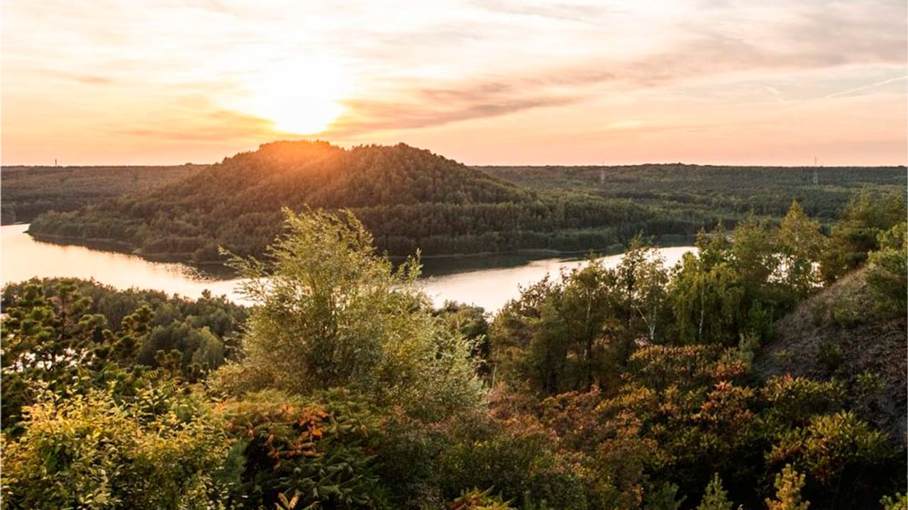
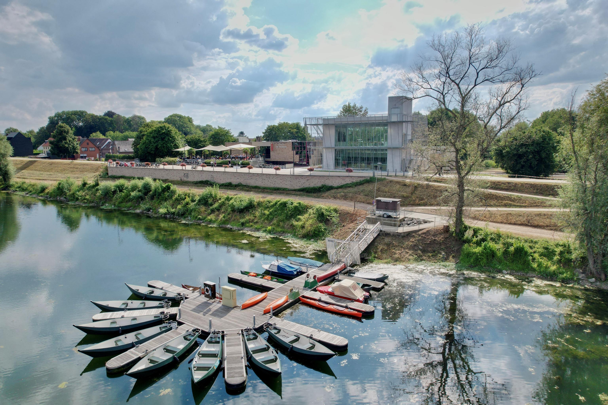

Vijf weetjes over Dilsen
- Dilsen is een deelgemeente van Dilsen-Stokkem.
- De stad grenst aan de Maas en de Nederlandse grens.
- Nationaal Park Hoge Kempen ligt vlakbij.
- Historisch bekend om zijn mijnindustrie.
- Perfect voor wandel- en fietstochten.
Nationaal Park Hoge Kempen
Het Nationaal Park Hoge Kempen is een van de mooiste natuurgebieden in België, ideaal voor wandel- en fietstochten.
Maascentrum De Wissen
Het bezoekerscentrum De Wissen biedt informatie over de Maas en is perfect voor natuurliefhebbers.
